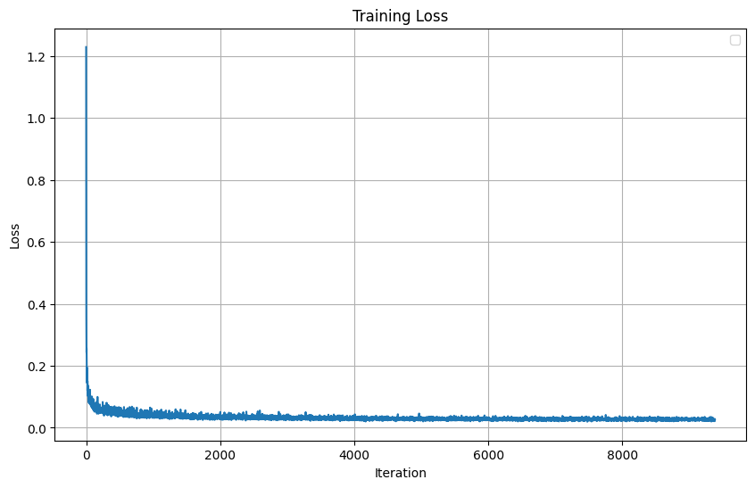

Part A: The Power of Diffusion Models!
Part 0: Setup
The model we use is the DeepFloyd IF diffusion model. Due to memory, storage, and time constraints, I only use the first stage, which creates the initial 32 x 32 images, but not the second stage, which upscales the image to be larger and more detailed (except for the below 3 images).
I used a random seed 42. However, my results were still non-deterministic. I beleive this is because of GPU non-determinism, caused by how floating point operations in the GPU are not perfectly commutative.
These are 3 example images that use both stages:
Using both stages yields good results! Changing the num_inference steps seems to improve the quality of the images.
Part 1: Sampling Loops
Adding noise to the image: t=0 is minimum, t=1000 is maximum.

Original Image
t=250
t=500
t=750
"Denoising" by performing a gaussian blur
t=250, blurred
t=500, blurred
t=750, blurred
Here we use DeepFloyd to attempt to denoise the image in a single step:
t=250, one step denoised
t=500, one step denoised
t=750, one step denoised
Here we use multiple steps to denoise the image, hopefully acheiving better results:
t=690
t=540
t=390
t=240
t=90
t=0 (Denoised)
Summary of 1.1 through 1.4 - Comparison of denoising methods from an image with t=750 noise:
Noised
Classically "Denoised"
One-Step Denoised
Iteratively Denoised
Using the diffusion model to generate images from the entire high quality image space:
Sampled Image 1
Sampled Image 2
Sampled Image 3
Sampled Image 4
Sampled Image 5
In the section above, the model doesen't have a specific "idea" in mind for what it is trying to target. As a result, the images are nonsensical.
To combat this, we use classifier-free guidance, which will direct the model towards a more coherent image:
Sampled Image 1
Sampled Image 2
Sampled Image 3
Sampled Image 4
Sampled Image 5
I think of this as modulating between a random point on the high quality image manifold to an image we specify:
Campanile
Darth Vader
A rat
Campanile Test Image:
i_start=1
i_start=3
i_start=5
i_start=7
i_start=10
i_start=20
Darth Vader:
i_start=1
i_start=3
i_start=5
i_start=7
i_start=10
i_start=20
An ugly rat:
i_start=1
i_start=3
i_start=5
i_start=7
i_start=10
i_start=20
I modulate between a random point on the high quality image space to the following 3 images:
A photo of a minecraft house
A really nice self portrait
An elegant drawing of a house
Minecraft:
i_start=1
i_start=3
i_start=5
i_start=7
i_start=10
i_start=20
Self-portrait:
i_start=1
i_start=3
i_start=5
i_start=7
i_start=10
i_start=20
A beautiful house:
i_start=1
i_start=3
i_start=5
i_start=7
i_start=10
i_start=20
I mask off an area of the following images in order to modify them:
The test image (top is masked)

A tiger (entire head is masked)
Steve from minecraft (face is masked)
Similar to the section above, except we now specify where on the image manifold we want to start from. In this case, the manifold of rocket ships, to the test images.
A rocket ship -> Campanile
i_start=1
i_start=3
i_start=5
i_start=7
i_start=10
i_start=20
A pencil -> Campanile
i_start=1
i_start=3
i_start=5
i_start=7
i_start=10
i_start=20
A man wearing a hat -> Campanile
i_start=1
i_start=3
i_start=5
i_start=7
i_start=10
i_start=20
These are images that look like a different thing depending on if you look at them upright or rotated 180 degrees:
An oil painting of an old man
An oil painting of people around a campfire
A hipster barista
A dog
coastline
A man wearing a hat
These are images that look like different things if you zoom in or zoom out:
Zoomed in, a waterfall. Zoomed out, a skull
Zoomed in, a waterfall. Zoomed out, an oil painting of an old man.
Zoomed in, a pencil. Zoomed out, a rocket.
Part B: Diffusion Models from Scratch!
Part 1: Training a Single-Step Denoising UNet
Training Loss (L2 Loss):
Noisy Images:
Results after 1st epoch:
Results after 5th epoch:
Part 2: Training a Diffusion Model
Loss Curve (l2):
Results after 5th epoch:

Results after 20th epoch:
Loss Curve (l2)
Results after 5th epoch:
Results after 20th epoch: